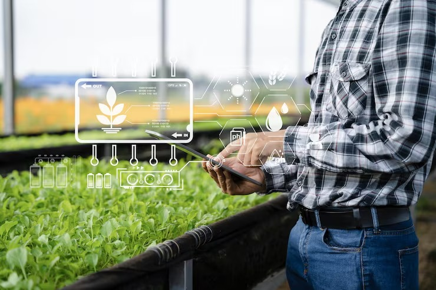

Cuidar do solo é cuidar do futuro
Nosso sensor IoT ajuda pequenos e médios produtores a agir antes que o fogo se espalhe, reduzindo riscos de queimadas, evitando multas e preservando a produtividade da terra.
Nosso sensor IoT ajuda pequenos e médios produtores a agir antes que o fogo se espalhe, reduzindo riscos de queimadas, evitando multas e preservando a produtividade da terra.
A calculadora utiliza dados médios de lucros por hectare, custos de recuperação do solo e valores de multas previstos em lei para áreas agrícolas e de vegetação nativa. A partir das informações que você insere (tipo de produção, área e lucro mensal), simulamos os prejuízos em caso de queimadas e comparamos com o cenário de uso do sensor IoT. Assim, você visualiza o quanto pode economizar, tanto evitando perdas de produção quanto reduzindo riscos de penalidades.
Cada experiência é uma prova do impacto positivo da tecnologia.
“Com o sensor de umidade, consegui monitorar melhor minhas áreas de cultivo e agir antes que qualquer foco de incêndio se espalhasse. Isso me trouxe tranquilidade e reduziu muito os riscos na produção.”
* 4.5“Antes eu não tinha noção real do prejuízo que um incêndio poderia causar. A calculadora e o sensor mostraram claramente os custos de recuperação e das multas. Hoje enxergo o investimento como essencial.”
* 4.5“A instalação foi simples e os dados são fáceis de acompanhar. Para mim, o maior benefício é saber que estou prevenindo perdas e evitando problemas legais, enquanto garanto mais produtividade no campo.”
* 4.5